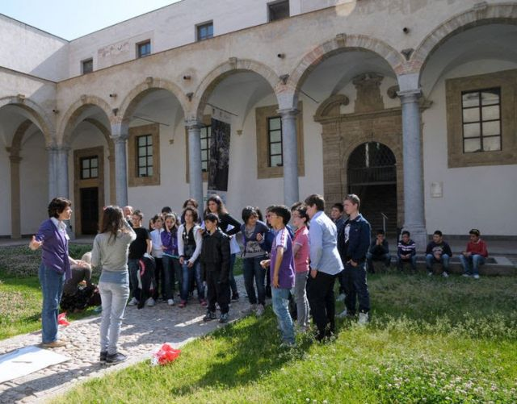
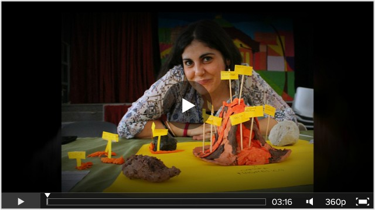
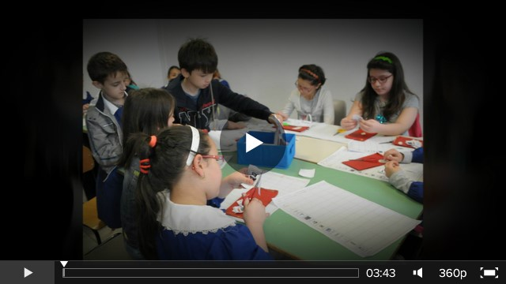

You are hereNews
News
Le ultime notizie di PalermoScienza
Al via la nona edizione di Esperienza inSegna
 Ha avuto inzio oggi, martedì 23 febbraio 2016, la nona edizione della manifestazione Esperienza inSegna, organizzata dall'Associazione PALERMOSCIENZA e dedicata quest'anno al tema A CQUA.
Ha avuto inzio oggi, martedì 23 febbraio 2016, la nona edizione della manifestazione Esperienza inSegna, organizzata dall'Associazione PALERMOSCIENZA e dedicata quest'anno al tema A CQUA.
La conferenza inaugurale Due parti di idrogeno e una di ossigeno, introdotta da Carmelo Arena, presidente dell'Associazione PALERMOSCIENZA, ha aperto la manifestazione: sono intervenuti il rettore dell'Università degli Studi di Palermo, Fabrizio Micari, e l'assessore alla scuola e realtà dell'infanzia del comune di Palermo, Barbara Evola.
Appuntamenti del giorno di apertura, oltre all'esposizione degli exhibit presentati al pubblico dalle scuole, le associazioni e gli enti espositori, sono stati la conferenza Palermo e l'acqua perduta a cura di Valerio Agnesi, presidente della Scuola delle Scienze di base e applicate dell'Università di Palermo e il labortorio Alla ricerca dell'acqua... in biblioteca a cura del Sistema bibliotecario e Archivio storico d'Ateneo.
A domani!
Un breve filmato sulla XXV Settimana della Cultura Scientifica e Tecnologica
 In occasione della XXV Settimana della Cultura Scientifica e Tecnologica, durante la presentazione del volume "Nascita e morte delle stelle" di Giuseppina Micela, astrofisica e direttore dell'INAF - Osservatorio Astronomico di Palermo, Valeria Greco, vicepresidente dell'associazione PALERMOSCIENZA, insieme al giornalista Mirko Ruisi, ha dialogato con l'autrice, in un incontro che si è svolto presso la libreria Mosudvivendi di Palermo.
In occasione della XXV Settimana della Cultura Scientifica e Tecnologica, durante la presentazione del volume "Nascita e morte delle stelle" di Giuseppina Micela, astrofisica e direttore dell'INAF - Osservatorio Astronomico di Palermo, Valeria Greco, vicepresidente dell'associazione PALERMOSCIENZA, insieme al giornalista Mirko Ruisi, ha dialogato con l'autrice, in un incontro che si è svolto presso la libreria Mosudvivendi di Palermo.
PALERMOSCIENZA partecipa alla XXV Settimana della Cultura Scientifica e Tecnologica

La terza edizione di "A Scuola di OpenCoesione"
Questo post per presentarvi un progetto destinato alle scuole secondarie superiori di ogni indirizzo , che sta raccogliendo le adesioni in queste settimane. Ci fa piacere farlo conoscere a tutti voi, ed è anche un promemoria per docenti interessati, ma anche per studenti e genitori per sollecitare la propria scuola a partecipare.
Ai nastri di partenza la terza edizione di "A Scuola di OpenCoesione" [ASOC], il percorso innovativo di didattica interdisciplinare per insegnare open data, data journalism e politiche di coesione nelle scuole secondarie superiori.
Dopo la prima edizione sperimentale, che ha visto il coinvolgimento di 7 scuole pilota, è arrivato il gran successo dell' edizione2014-2015, con la partecipazione di 86 scuole su tutto il territorio nazionale, per un totale di oltre 2.000 studenti coinvolti e 90 insegnanti, oltre la collaborazione sul territorio di 30 Centri di informazione Europe Direct e oltre 50 Associazioni, selezionate come "Amici di A Scuola di OpenCoesione".
Quest'anno il bando è aperto a 100 scuole secondarie superiori di ogni indirizzo , che potranno usufruire a livello territoriale del supporto degli Europe Direct, la rete territoriale dei centri di informazione della Commissione Europea e di Associazioni attive sul territorio sui temi delle politiche di coesione o su trasparenza e open data, con le quali le scuole potranno scegliere di collaborare presentando una candidatura congiunta. I docenti che decidono di presentare domanda di partecipazione potranno indicare in fase di candidatura il centro Europe Direct e l'Associazione del territorio scelta come supporto alle attività in classe.
COS'E' ASOC
"A Scuola di OpenCoesione" (ASOC) nasce nell'ambito dell'iniziativa OpenCoesione in collaborazione con il Ministero dell'Istruzione, dell'Università e della Ricerca [MIUR] e la Rappresentanza in Italia della Commissione Europea, per il coinvolgimento della rete di centri di informazione Europe Direct a supporto delle scuole partecipanti.
COSA FA
"A Scuola di OpenCoesione" si inserisce nell'ambito dell'iniziativa di open government sulle politiche di coesione "OpenCoesione" (www.opencoesione.gov.it), avviata nel 2012.
Le classi che partecipano al progetto sono impegnate nel corso dell'anno scolastico in un percorso didattico guidato dal docente referente e articolato in 6 tappe: 4 lezioni in classe di circa 3 ore, una "visita di monitoraggio civico" sul luogo di realizzazione del progetto scelto e un evento finale di disseminazione dei risultati, confronto con le istituzioni e coinvolgimento della comunità locale. A questo si aggiungono complessivamente circa 30 ore di lavoro autonomo durante l'intero arco del progetto.
Le attività sono finalizzate ad elaborare una ricerca di monitoraggio civico, utilizzando anche strumenti di tecnologia dell'informazione. L'obiettivo è approfondire le caratteristiche socio-economiche, ambientali e/o culturali del proprio territorio a partire dalle materie di studio e da uno o più interventi finanziati dalle politiche di coesione su un tema di interesse, verificando quindi come le politiche stesse intervengono per migliorare il contesto locale, contribuendo a formare gli studenti con competenze digitali affinché diventino cittadini consapevoli e attivi nella partecipazione alla vita pubblica del proprio territorio.
Leggi tutte le informazioni sul percorso didattico nel Vademecum, disponibile QUI.
DESTINATARI
Per l'anno scolastico 2015-2016 la partecipazione al progetto ASOC è aperta a 100 scuole secondarie superiori di ogni indirizzo, che dispongano dei requisiti minimi indicati nell'apposita sezione del bando .
COSA SI VINCE
Le classi partecipanti concorrono ad un viaggio premio di due giorni a Bruxelles presso le istituzioni europee, finanziato dalla Rappresentanza in Italia della Commissione Europea.
MODALITA' DI ADESIONE e SCADENZA
Le candidature ( scarica qui il FAC SIMILE ), compilate ed inviate esclusivamente secondo l'apposito MODULO ONLINE disponibile sul sito www.ascuoladiopencoesione.it , dovranno pervenire entro le ore 15:00 del 2 ottobre 2015.
Leggi nel dettaglio le modalità sul bando emesso dal MIUR in data 8 Settembre 2015.

"I nostri sensi come strumenti di rilevamento": un evento in collaborazione con la comunità Open Data Sicilia
SummerGAM: una ricarica di scienza e arte per ripartire col nuovo anno
Questa estate l'associazione PALERMOSCIENZA rinnova la collaborazione con la Galleria d'Arte Moderna di Palermo, proponendo due settimane di laboratori dedicati alla scienza e all'arte, pensati per i bambini dai 6 agli 11 anni. Ogni mattina, dal martedì al sabato, dalle 8.30 alle 13.30, per le prime due settimane di settembre, gli esperti dell'Associazione, affiancati dallo staff didattico della GAM, proporranno un percorso multidisciplinare che prevede attività di laboratorio, letture critiche delle immagini delle opere, sperimentazioni su tecniche artistiche ed esperienze espressive.
Si comincia martedì 1° settembre con la settimana dedicata a La luce e il colore che si concluderà venerdì4 settembre e si continua con la settimana incentrata su Spazio, tempo e movimento, che si svolgerà da martedì 8 settembre a sabato 12 settembre.
Iscrizione entro il 26 agosto 2015.
Info e prenotazioni:
tel 091 8431605
didattica@gampalermo.it
Per ulteriori informazioni fate riferimento al programma.

"Proprietà Transitiva": il video della festa finale
L'associazione PALERMOSCIENZA è uno dei partner del progetto "Proprietà Transitiva", che durerà due anni. Qui sotto il video relativo alla festa finale del primo anno, che si è svolta presso l'IC Russo-Raciti. 
A scuola di risparmio energetico: la video "pillola"
AMG GAS ci ha chiesto anche quest'anno di condurre due laboratori sul risparmio energetico presso alcune classi della scuola primaria.
Qui sotto una sintesi di pochi minuti.
